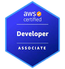

Pujitha Chowdary

Summary
As a Java Full Stack Developer, responsible for Designing, developing, and testing of features and functions delivered via applications and services. Involved actively in complete software development life cycle of various Client/Server and Web applications for healthcare and in many other domains.
Education:
- Arizona State University - Master of Science in Information Technology - GPA: 4.0
Work Experience
Allstate Insurance : Java Full Stack Developer (Jan 2023 – Present)
- Collaborated with stakeholders to define system architecture and component interactions.
- Designed Business and Presentation tiers using Struts, JSP, HTML, CSS, and JavaScript, adhering to design specifications
and ensuring user-friendly interfaces.
- Utilized Angular 14 to create a Single Page Application with dynamic routing.
- Implemented MVC-2 architecture using Jakarta Struts framework and integrated backend logic with Servlets.
- Employed Hibernate ORM for object-relational mapping, including various SQL queries and Stored Procedures for Oracle
database.
- Developed and integrated action classes with Spring and Servlets, implementing Spring Batch and validation services to
ensure data consistency.
- Utilized Spring Core Annotations for Dependency Injection (DI), Spring MVC for REST API development, and Spring Boot
for microservices creation.
- Implemented multi-threaded synchronization processes with JMS queues and conducted comprehensive unit and integration
testing using BDD with Cucumber Gherkin.
- Deployed serverless architecture using AWS Lambda and configured AWS for high-availability & fault tolerance.
- Implemented CI/CD pipelines using Kubernetes, streamlining deployment processes.
- Utilized Eclipse-based Spring Tool Suite (STS) for development and debugging, configured JIRA for project management,
and maintained version control with GIT.
Amgen Inc : Java Full Stack Developer (May 2022 – Dec 2022)
- Developed interactive UI pages with HTML5, CSS3, JavaScript, and React.js, enhancing user experience.
- Used Java Servlets, JSP, and AJAX for the web component development.
- Utilized Node.js to run Grunt tasks for project building and implemented modules with BowerJS and Express.
- Implemented SOAP-based web services with JAX-WS API and RESTful web services with JAX-RS API, including OAuth
authentication with Spring Security.
- Created YAML files for integrating Swagger API within the UI.
- Utilized Apache Kafka for high-speed messaging and Akka for efficient data processing.
- Developed Java-based microservices, integrating authentication builds out to the Docker registry using Jenkins pipelines and
deploying them to Kubernetes.
- Configured Jenkins with Gradle for project builds and GitHub for version control, automating deployments in production and
pre-production environments.
- Utilized MongoDB for scalable data storage, implementing efficient data models and queries.
Bajaj Finserv : Java Full Stack Developer (July 2020 - Nov 2021)
- Developed the frontend with HTML, CSS, JavaScript, JQuery, and Angular for dynamic interfaces, migrating the project
from Angular 6 to Angular 10.
- Applied Java concepts such as Lambda Expressions, Functional Interfaces, and Streams API throughout the application.
- Implemented Spring Web MVC and J2EE components including Spring MVC, IOC, Transactions, and Security modules.
- Utilized JMS for asynchronous data exchange and developed JASPER reports for test case results.
- Managed data persistence with Hibernate and chose Apache Cassandra for scalable, masterless data storage.
- Utilized AWS for infrastructure and cloud services, employing AWS Lambda for serverless computing and AWS DevOps for
source control.
BookMyShow : Java Developer (May 2019 - June 2020)
- Designed dynamic, multi-browser compatible pages using HTML, CSS, jQuery, JavaScript, and React, implementing design
wireframes and exposing backend services on Spring Boot.
- Employed NodeJS for authentication, authorization, session maintenance, and server-side automation, enhancing backend
functionalities.
- Developed RESTful Web Services with XML parsing to interact with other modules.
- Utilized Core Java for multi-threading, collections, and GUI AWT, and implemented DAO code for database interaction
using Spring MVC.
- Used SQL Server for database operations, implementing SQL queries and stored procedures.
- Integrated and deployed code on CI environments using Jenkins, and managed project versions with GIT for collaborative
development.
Skills
Programming Languages:
Java, JavaScript, C/C++, Python, SQL, HTML/CSS.
Web Technologies:
Angular, React, AJAX, Bootstrap, jQuery, NodeJS, Express JS.
J2EE Technologies & frameworks:
Servlets, JSP, JSF, JDBC, EJB, Struts, SOAP, REST, Java API(JAXP, JAXB), JPA, JMS,
Spring (Spring MVC, Spring Boot), Hibernate.
Databases:
SQL (Oracle, SQL Server, MySQL), NoSQL (MongoDB, Cassandra).
Version Control & Project Management Tools:
GIT, GitHub, TFS, JIRA, Microsoft Project.
Cloud Technologies & DevOps Tools:
AWS (EC2, S3, Lambda, RDS, IAM, CloudFront, VPC, EKS), Microsoft Azure (Azure
VMs, Azure Blob Storage, Azure Functions, Azure AD), OpenShift, Docker, Jenkins, Kubernetes.
Testing Tools & Frameworks:
Junit, TestNG, Mockito, Jasmine, Karma, Postman.
IDE’s & Build Tools:
Eclipse, VS Code, IntelliJ, Sublime Text, Putty, Ant, Maven, Gradle.